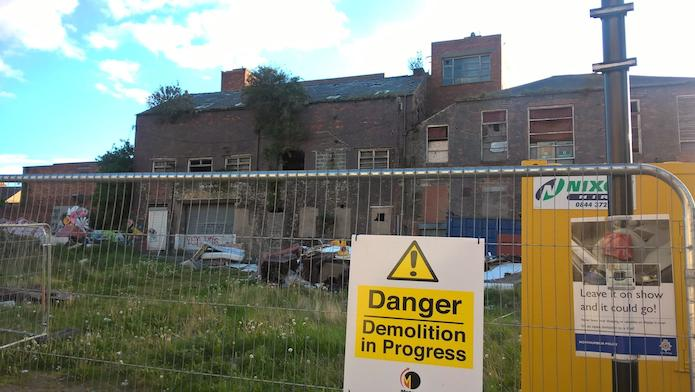
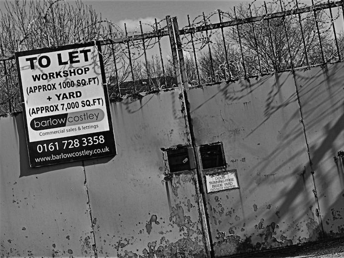
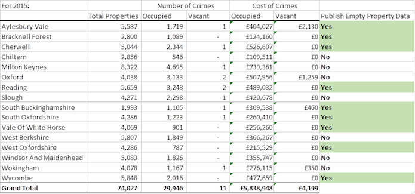

Comment: Open data, crime and punishment – the perplexing pursuit of business rates
Since the recession in 2008, news of high-street businesses failing has not long been out of the headlines. Understanding the scale of the problem, and ultimately tackling it, requires data – data that many local authorities are not willing to release. "From the sublime to the ridiculous," Gavin Chait reflects on reasons given to him by 66 authorities in refusing his Freedom of Information requests, and warns of the harm being done to local economies. This is the first in our long-form series
There are no widely-available data that reveal the true extent of empty business premises. CC BY 4.0, uploaded by [Daniel Oines](https://www.flickr.com/photos/dno1967b/5396615881 “Daniel Oines").
Milton Keynes will. So will Swansea. Westminster City Council won’t do it under any circumstances. City of London is terrified it will cause civil unrest. Birmingham, Camden, Oxford and Arun won’t either, but they’re not quite so precious.
All claim to have their reasons. None have any evidence one way or the other.
Out of 348 local authorities in England and Wales, almost 70% will release detailed lists of empty commercial properties. The rest will not because they claim it will cause crime.
As I write, the The International Consortium of Investigative Journalists have released access to the full database of Mossack Fonseca clients.
Companies using expensive offshore vehicles to hide their activity are missing this one cheap trick: they don’t need to go offshore. They merely have to select an appropriate town to operate from and they’ll have staunch allies in local authorities who refuse to reveal who owns local businesses, what rates they actually pay, or whether they’re even trading.
Over the past five months, I have tried to extract that data from every local authority in England and Wales. To date, 66 authorities have refused my Freedom of Information (FOI) requests. Their reasons range from the sublime to the ridiculous.
Along the way, they reveal a very real lack of understanding of the meaning of open data, the purpose of the Freedom of Information Act, and are – perhaps unintentionally – causing genuine harm to their local economies.
The problem: when economies fail
Ever since the recession in 2008, the headlines have been filled with anxiety as high streets empty. Gap-toothed lines of shops illustrate articles like ‘Town centre CRISIS’.
The Portas Review in 2011 was followed by The Grimsey Review and Strategy for Future Retail in 2013. Each attempting to tell local authorities and business centres what they’re doing wrong, and what they should do to bring investment and jobs back to their empty shops, offices and industrial sites.
Serious people. Serious reports. Serious problem.
Money was spent. The outcomes are uncertain.
There are no widely-available data that reveal the true extent of empty business premises. There is no benchmark. No way of knowing what is normal, and how particular experiences may diverge from that historical trend. Without historical research data, interventions are useless since we have no idea how they affect change, and whether that change would have happened anyway.
Serena Page, at University of Southampton, writing in ‘Data constraints and the high-street crisis,’ laments this dire paucity of research data informing our local economic response: "At the entry to the retail crisis there had been a period of 30 years whereby access to open data in respect to high streets was extremely limited."
Researchers without data have no way to assess whether what we’re going through is part of a long-term trend, a short-term disaster, or not a problem at all.
Page goes on to say that, without such data, no-one had a clear understanding of the problem: "At the start of the high-street crisis, there was an imbalanced and contested understanding of high-street performance."
We have decades of data on unemployment; how many out of work, how cycles affect jobs, what the structural unemployment rate is.
There are 1.9 million commercial properties across England and Wales. We don’t even know how many vacant business premises there are across the country, let alone how that varies in different regions, or even the nature of the vacancies.
All we seem to know about are high-street shops, and then only because we see them every day. Services, like Local Data Company, will – for a price – tell you where those empty retail shops are, but there is no universally available open dataset, and the more limited commercial data are not affordable to the low budgets of academic research departments.
Despite this lack of insight, local authorities have been taking adventurous risks with their rates and empty commercial properties. Hundreds of millions of pounds have been spent.
The reaction: local authorities and emptying high streets

Sunderland. Credit: Gavin Chait, CC-BY-4.0.
Rochdale slashed their business rates by 80% following years of urban decline that saw almost one in four shops in their commercial centre standing empty.
Business rates are set by central government and are currently about 49% of the rental valuation: a valuation set by the Valuations Office back in 2008, just before the recession and when commercial rents were at a high. A small retail store could be paying £6,000 a year in rent but, because the original valuation was set at £40,000, their rates would be closer to £19,000. Rochdale’s "reset" reduces that cost to £3,350.
Given that business rates comprise the vast bulk of local authority revenue, Rochdale is taking the risk that bringing in new tenants will – eventually – result in new jobs, a more vibrant commercial sector and more businesses who will pay full rates.
Liverpool went even further, selling off 12 empty retail units in Picton for £1 and offering a rates holiday for three years.
All of this is brave, and may even work, but the question needs to go much deeper than whether the rates are too high. Are there too many commercial premises given the drive to sell more stuff online? And is it only about retail? What about office or industrial space?
What exactly is going on in our commercial space across England and Wales? What is the impact on local government revenue when rates are discounted? What happens in local authorities that cannot afford to subsidise these experiments?
And, if everyone is finding reasons to discount business rates, what should the real fair-value of business rates be?
Beginning research: the path to open data through Freedom of Information
Whitby rooftops. CC BY 2.0, uploaded by [Craig Sunter](https://www.flickr.com/photos/[email protected]/18092393819/in/album-72157653192259388/ “Craig Sunter").
There is no single reference dataset compiling every single empty commercial property in England and Wales. Neither is there a single database revealing actual rates paid.
Every single local authority does, however, know their own ratepayers and what reliefs or exemptions they’re offering them. They also know each of the properties that are actively trading.
Will they release that data?
I started by looking up data released by every local authority. Weeks were spent navigating atrocious web design and perplexing categorisation. Most local authorities have no open data site. Many that do, ignore them and continue to post data randomly on their council websites.
Out of 350 authorities, I found 70 releasing compliant data. That only left 280. I was going to need to send each an individual FOI request.
For those of you new to the process, I recommend WhatDoTheyKnow. The wonderful folks there provide the tools you need to manage FOI requests and ensure that all responses and results are public.
You can follow my progress here: https://www.whatdotheyknow.com/user/gavin_chait/requests
On 11 February 2016, I sent out my first batch of requests, asking each local authority for a list of commercial properties in their area and with the following fields for each:
Billing Authority Reference Number
Firm's Trading Name (ie property occupant, with a redaction in the case of personal names)
Full Property Address (Number, Street, Postal Code, Town)
Occupied / Vacant
Date of Occupation / Vacancy
Actual annual rates charged (in Pounds)
Almost immediately, South Holland local authority responded:
"[W]e have not provided an indicator as to whether the property is vacant or occupied. Releasing this information is likely to prejudice the prevention and detection of crime given that empty premises attract criminal activity and damage. Lincolnshire particularly has experienced a high degree of metal thefts from empty commercial properties in the area in the recent past. That accounted for 15% of the overall crime rate in Lincolnshire at that time and so releasing information on vacant properties is likely to exacerbate this problem and the blight that goes with it. Having considered the public interest test, on balance I believe it is not in the public interest to disclose the information – this is in keeping with section 31(1)(a) of the Freedom Of Information Act 2000."
They were not the first.
Over the next five months, 66 local authorities would avail themselves of the Section 31(1)(a) exemption. Anything, from listing the names of beneficial owners, to property occupation status, to publishing the reliefs and exemptions offered to businesses, could be declared as increasing the potential for crime.
It became an all-purpose "We’re not publishing" blocker.
Blocking data release: Section 31(1)(a) and the uses of crime as an exemption

'To let.' CC BY 4.0, uploaded by Craig Sunter.
According to the Information Commissioner's Office, "Section 31 is a prejudice-based exemption and is subject to the public interest test. This means that not only does the information have to prejudice one of the purposes listed, but, before the information can be withheld, the public interest in preventing that prejudice must outweigh the public interest in disclosure."
Section 31(1)(a) deals specifically with "the prevention or detection of crime".
In order to justify a Section 31(1)(a) exemption it is not sufficient simply to claim that crime occurs in empty commercial premises, it is also necessary to provide evidence that publishing a list of empty properties in real, measurable terms increases the incidence of crime in such properties.
There's something about the implication that metal theft is so lucrative that criminals are willing to set up database systems to track vacant properties, and have rapid-response teams on the move to take advantage, that troubled me.
ScrapSales tracks the prices of scrap metal. The most valuable scrap metal you’re likely to get out of any property are the copper pipes. They’re only £2.60 a kilogram.
This is not theft of several miles of copper cable from a railway line. I am requesting lists of commercial properties. The best you’ll get is a few metres of copper pipe ripped out of the wall beneath the sink.
For several hours’ work, and the risk of a custodial sentence, you’re unlikely to get more than a few pounds of cash in exchange.
I wasn’t disputing that people may well steal scrap metal, merely that anyone with the skills to import and clean up a messy dataset, then reconcile it with geography to track down the empty properties (many of which may have been filled months before, since the data can be up to 12 months in arrears), would be unlikely to dedicate these skills for £2.60 worth of bent copper.
It seems unlikely that publishing lists of empty properties would have any impact on property crime.
As the Section 31(1)(a) refusals piled up, and the justifications became wilder and wilder, I became concerned.
There didn’t seem to be much evidence to support the exemption. Simply declaring that crime was possible seemed to be enough to prevent data release.
Local authorities claimed that vacancies are a secret (which then implies that advertising for new tenants breaks that secrecy), that it would encourage squatting (not actually a crime when it comes to commercial property), or that it would lead to fraud.
The fraud response was even more frustrating. Some authorities claim to have such weak security, they believe that anyone who knows the address or state of occupation of a property would permit a stranger to hijack someone’s rates account. That’s not something they should be proud of.
The Freedom of Information Act allowed for me to request an internal review, but all that happened was that local authorities simply said, "We’ve been through your query and our response, and we did what we’re supposed to."
All of this seemed mad, but I had nothing to offer in response. I needed data.
Appealing Section 31(1)(a): the true state of crime in business properties
Shoppers on Briggate, Leeds. CC BY 3.0, uploaded by [Razorlax](https://commons.wikimedia.org/wiki/File:Leeds-briggate.jpg “Razorlax").
Over the past three months, I placed FOI requests with all police services across England and Wales, requesting total number of incidents of criminal activity in empty and occupied commercial properties.
The combination of crime incident data and the list of local authorities would permit easy comparison between areas that regularly disclosed and those that chose not to in order to assess whether there was a greater risk of crime as a result of disclosure.
Out of 44 police services, only two are actually able to provide data on incidents in empty commercial properties. The remaining police services do not specifically collect such data and have no way of knowing what the incident rates are.
Read that again.
Most of the authorities using Section 31(1)(a) to refuse publication justify their decision with statements from their local police service, stating that empty property crime is sufficiently difficult to control that censorship is required.
They make those claims without actually having any data on-hand to validate them.
The only two who have provided me with data are Thames Valley Police and North Wales Police.
Their data are unequivocal.
Incidents of crime in empty properties are exceedingly rare, and there is no variation in the incidence rate between local authorities who do publish, and those who do not publish data on empty properties.
In North Wales, there are an average of 1,780 crimes a year in occupied properties, and 26 crimes a year in unoccupied properties that largely have to do with theft, vandalism or arson (note that squatting in commercial property is not a crime and so unrecorded).
There are about 45,000 commercial properties in North Wales and vacancies are amongst the worst in England and Wales (ranging from 15% to 25%).
In other words, the ratio of crimes in occupied v empty commercial properties is almost 70:1, compared with an actual occupied v empty ratio of 6:1 (ie an occupied commercial property is 10 times more likely to experience an incident of crime than an unoccupied one).
This tells us that crime in empty commercial premises is extremely rare, and explains why most police services do not bother to specifically collect such data.
The data from the Thames Valley police gives us a better idea of the variation between authorities that publish, and those that don’t.
For example, in 2015 Oxford had 4,038 commercial properties and suffered two cases of empty commercial property crime at a cost of £1,259. In comparison, they had 3,133 cases of crime committed in occupied business premises, at a cost of £507,956.
By comparison, Reading, with 5,659 commercial properties, suffered two empty commercial property crimes that caused no damage at all.
Oxford refuses to publish under Section 31(1)(a) while Reading publishes regularly.
In total, across the Thames Valley, for 74,027 properties – of which about 7,000 are empty – only 11 crimes related to empty properties were recorded. Compare that with occupied and actively-traded properties, which experienced 29,946 reported crimes.
Here’s comparative data for 2015:

In two distinct parts of the UK, with completely different approaches to recording crime, empty property crime is extremely rare, and publication of data listing empty properties does not have any impact on the number of incidents of crime.
Some local authorities who claim exemption under Section 31(1)(a) say they have their own data to validate these claims. I sent FOIs requesting data to 64 local authorities (including both those who do publish empty property data, and those who do not). Not one has any data – other than very sparse anecdotal data – to support their claim.
Slough, for example, says the following as justification: "I do remember the Regus building in Herschel St. being squatted and then dismantled from the inside out. All electrical wiring, copper piping and anything of values was removed by persons unknown in 2012. The exact same thing happened in the old Nationwide Building Society building in the high street when it too was very badly damaged when all of the copper (pipes and wires) were removed causing severe flooding (around 2011)."
I’ll save you the trouble of reading their complete response. By their own admission, they have no official data on which to base their decision, merely:
2014 - 1
2012 - 1
2011 - 1
... and two other cases without a year listed.
You must be as excited as I was when I received that data from Thames Valley Police? That resolves the matter, surely!
Oh, yes, of course it doesn’t.
Internal reviews and the reinforcement of bias
I resumed my internal reviews with new vigour. Surely now the local authorities would realise they have no reason to fear open data.
Oxford considered my evidence – the eye-glazing lack of crime in their area – and declared: "It seems to me to be common sense that an empty property is considerably more vulnerable to certain types of crime eg: criminal damage, metal theft, theft of other material, drug cultivation, squatting and other unlawful uses, than an occupied property as the existence of an occupant is a major deterrent."
The reviewer went on regarding my evidence: "I’m afraid I don’t see that these carry much weight. The statistics are very general and lack detail, they only cover recorded crimes and do not focus on the types of crime to which empty properties are especially vulnerable. They do not take account of the particular character and built topography of Oxford in relation to the risk of empty property crime. Even accepting the stats as written they indicate Oxford has the highest instance of empty property crime in the region. If protecting empty property details is likely to prevent even one crime the exemption is properly applied."
… which is pure garbage. I should be diplomatic, I realise, but … absolute rot.
Data are data. What does "the particular character and built topography of Oxford" have to do with actual evidence?
The frustration continued, as did the evident ambivalence to tying Section 31(1)(a) refusals to anything to do with my request.
City of London even declared that publishing the list would result in Occupy London putting up more tents in front of St Paul's Cathedral. "Although the campsite at St Paul’s Cathedral was removed, the threat to buildings in the City remains."
Not only was the last Occupy London activity they cite back in 2012 – four years ago – but it was in a public place. A piece of open ground. Seriously, look at it.
{kind=link}
Occupy London. CC BY 3.0, uploaded by [Occupy London](https://en.wikipedia.org/wiki/Occupy_London#/media/File:Occupy-St-Pauls-Panorama-Large-High-Quality.jpg “Occupy London").
If local authorities aren’t even going to pretend that their reasons for citing Section 31(1)(a) have anything to do with the data I’m requesting, how can one get justice?
Appealing to the Information Commissioner’s Office
Appealing to the Information Commissioner’s Office (ICO) is straightforward. Fill in a short form, provide background to your issue, and some evidence as to why you feel their claim is invalid, and press send.
The ICO will first attempt to mediate with the local authority. If they can get them to change their minds, then they don’t need to make a judgement. If not, they will produce a statement either confirming the original decision, or validating the appeal.
South Holland reviewed the evidence, and then they published.
So, that’s the end of it, right? I won?
No. Far from it.
I have exhausted my internal review with 35 local authorities. I have submitted each of these for review by the Commissioner. This is a large case-load for their small team and the gist of my appeal is identical for each.
They’ve decided to select two authorities as test cases. They feel I’ve raised an important point about the burden of evidence and the public interest defence which they want to take through a full appeal. They can then issue guidance to local authorities which will have the impact of changing case law.
Effectively – while this will take months to complete – by the end of the year I may have the weight of established statute behind me and should be able to take my current 68% cover up to as close to 100% as I can get.
More recently, a few authorities – including Bristol and Copeland – have considered my evidence during the internal reviews I’m still waiting on, and have reversed their original decisions.
At the beginning, I felt like a person who – upon noticing the iceberg – leapt into the water to attempt to push against the Titanic and swim it clear of danger. It felt like I had little chance of success.
However, now, I feel a little bit of give. Maybe the ship will move.
A luta continua
'Data.Tron' by Ryoji Ikeda CC BY 3.0, uploaded by [Shervinafshar](https://commons.wikimedia.org/wiki/File:Transmediale-2010-Ryoji_Ikeda-Data-Tron-2.jpg “Shervinafshar").
Crime is an emotive issue.
'Think of the children' and 'Strong on crime' are two curses used to justify all manner of abominable decisions.
For as long as local authorities are able to intimidate and obfuscate legitimate queries with their all-purpose "We need to prevent crime" response – doing so without the need to provide any evidence and including even tangential anecdotal tales to support their claim – we will not have full access to the data that should be ours.
And for as long as we have no data to support us, evidence-based decision-making is trumped by selection bias and superstitious dread.
Supporting our high streets and small businesses requires real people to put their savings and homes at risk. It requires local authorities to use scarce financial resources in the most effective way possible; one that is not simply a gamble with ratepayers money.
Without the hard data and analysis to support decision-making, local authorities and central government will be flying blind. Worse, they doom our entrepreneurs and investors to unnecessary hardship.
We need that data.
I have dedicated four months to reach a single decision in my favour.
There are still 66 local authorities to go.
Gavin Chait is an open data engineer and development economist at Whythawk, an ODI Member. Whythawk’s business intelligence research service – using the data described in this article – is at http://pikhaya.com, and has received support from the ODI via the Jobs Open Data Challenge. Whythawk also received funding from the EU Open Data Incubator to develop this service.
If you have ideas or experience in open data that you'd like to share, pitch us a blog or tweet us at @ODIHQ.